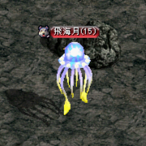
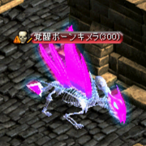

お久しぶりです(ﾟдﾟ)！
もうすぐ夏ですね。金鯖ですね。金鯖でぜひテイマをやりましょう！
改変前よりすごく強くなっているので本当にオススメなんですが、ややこしさは相変わらず...というか倍増してます。
ペットも改変前とは全然違うのでなに使ったらいいか難しいです_(:3 」∠ )_
そこで今回は序盤にオススメのペットを改めて紹介していきます！
ここで紹介していないペットもほとんどは改変前より強くなっているので、気になったら色々テイムしてみてね！
テイマをプレイしてみるきっかけ・参考にして頂けたら幸いです😶
カメとクラゲがおすすめ！！

まさかの・・・？！
って感じですが本当に強いです！
【カメ】
 |
【カメ】 |
|---|---|
| 生息地 | ギルディル川 / ナス橋付近 ※古都南 |
| 基本攻撃 | 水属性単体 ×2段 |
| 特殊攻撃 | 水属性範囲 ×5段（同時多段） |
【クラゲ】
|  |
【クラゲ】 |
|---|---|
| 生息地 | ギルディル川 沼地洞窟 B1 ※古都南の洞窟 |
| 基本攻撃 | 水属性単体 ×2段 |
| 特殊攻撃 | 水属性範囲 ×7段（持続的なやつ） |
以降では中盤からオススメのペットを紹介します！ 使い勝手は上記のカメやクラゲと大体一緒なので、 属性や見た目の好みでどうぞ！
中盤からはこちらもオススメ！
【ボーンキメラ】
|  |
【ボーンキメラ】 |
|---|---|
| 生息地 | スウェブタワー B1 |
| 基本攻撃 | 大地属性単体 ×2段 |
| 特殊攻撃 | 大地属性範囲 ×5段（同時多段）+毒 |
【森の司令】
 |
【森の司令】 |
|---|---|
| 生息地 | 時の森3層 |
| 基本攻撃 | 大地属性単体 ×2段 |
| 特殊攻撃 | 大地属性範囲 ×13段（持続的なやつ）+毒 |
【呪術者】
 |
【呪術者】 |
|---|---|
| 生息地 | 生命の森中心部 |
| 基本攻撃 | 風属性単体 ×2段 |
| 特殊攻撃 | 風属性範囲 ×7段（持続的なやつ |
さいごに
金鯖の方向けに、知識のスキル振りも一例書いておきます！
スキル振りは
⇒「気まぐれの日」Lv50
⇒「風雨の日」Lv30「教える」Lv30「誉める」Lv30「唐辛子を食べさせる」Lv30
⇒真心の民に覚醒
⇒風雨、教える、誉める、辛子それぞれバランスよく上げてLv50に
⇒覚醒スキル「合奏：爆音」をとる
って流れが良い感じです！
覚醒スキルで注意点があって、「誉める」は覚醒させても上限が上がるだけで倍率はそのままです。
もしスキル装備があんまりないなら「誉める」を覚醒させるのは後回しにしたほうがいいです。
最初はクラゲがオススメ！ぜひお試しください🙆
色々テイムして遊びましょう・。・！